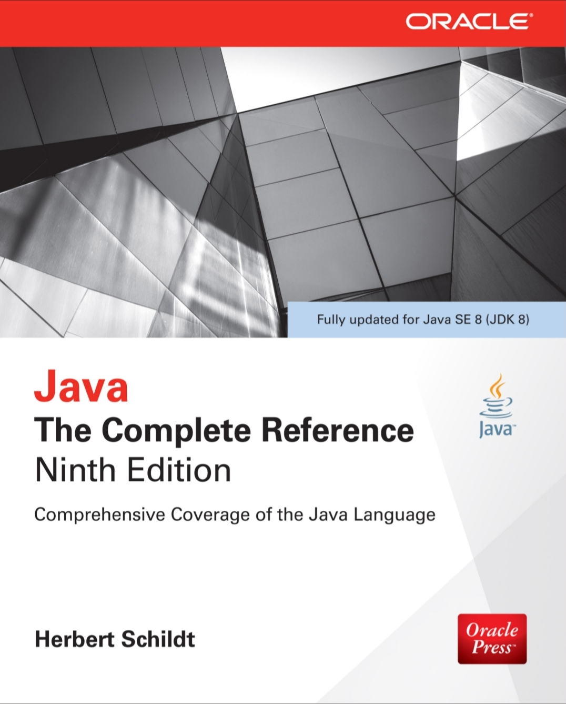

Object Oriented Programming Using Advance Java
About this Subject
Java is a high-level, object-oriented programming language developed by Sun Microsystems (now owned by Oracle).
It follows the "Write Once, Run Anywhere" principle, meaning Java programs can run on any platform with a
Java Virtual Machine (JVM).
It is widely used for building applications ranging from desktop software to web and
mobile applications.
Advanced Java
Advanced Java refers to the specialized topics and APIs used for building enterprise-level applications. It
includes JDBC (Java Database Connectivity), Servlets, JSP (JavaServer Pages), Hibernate, Spring, and Web
Services. Advanced Java is mainly used for developing web-based, distributed, and networking applications.
Syllabus
Total Hrs. : 42
Unit-1 [No. of Hrs.:10]
The Collections Framework: Collections overview, Collection Interfaces, The Collection classes- Array List, Linked
List, Hash Set, Tree Set, Priority Queue, Array Deque. Accessing a Collection via an Iterator, Using an Iterator,
The For-Each alternative, Map Interfaces and Classes, Comparators, Collection algorithms, Arrays, The Legacy Classes
and Interfaces- Dictionary, Hashtable, Properties, Stack, Vector More Utility classes, String Tokenizer, Bit Set,
Date, Calendar, Random, Formatter, Scanner
Unit-2 [No. of Hrs.:10]
Design of User Interfaces: Swing, Japplet, Icons and Labels, Text Fields, Buttons, Jbutton Class, CheckBox, Radio
Buttons, The Container, Panel, Windows, and Frame Classes, Combo Box, Tabbed Panes, ScrollPanes, Trees, Tables,
Custom Rendering of Jlist Cells
Unit-3 [No. of Hrs.:07]
Socket Programming: Connecting to a server, implementing a server, Sending E-mail, Making URL connections, Advance
Socket Programming. JDBC: JDBC Fundamentals, Establishing Connectivity and working with connection interface,
working with statements, Creating and Executing SQL statements, working with Result Set Object & Result Set Meta
Data.
Unit-4 [No. of Hrs.:10]
Servlets: Introduction to Servlets, Life cycle of Servlets, Creating, Compiling and running Servlets, Reading the
Servlets Parameters, Reading Initialization parameter, Packages- javax.servlet Package, Handling HTTP Request and
Response (GET / POST Request), Cookies and Session Tracking.
Unit-5 [No. of Hrs.:05]
JSP: JSP Architecture, JSP Access Mode, JSP Syntax Basic (Directions, Declarations, Expression, Scriplets and
Comments, JSP Implicit Object, Object Scope, Synchronization Issue, Session Management).
Text Books
[T1] Gary Cornell and Horstmann Cay S., “Core Java, Vol I and Vol II”, Sun Microsystems Press
[T2] Herbert Schildt, “Java: The Complete Reference”, McGraw-Hill
Reference Book
[R1] Philip Hanna, “JSP: The Complete Reference”, McGraw-Hill.
